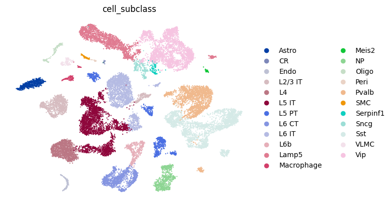
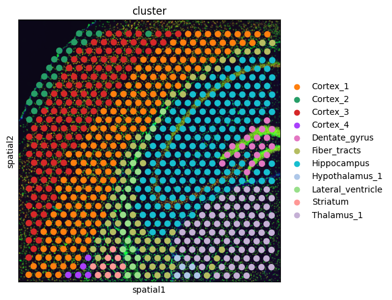
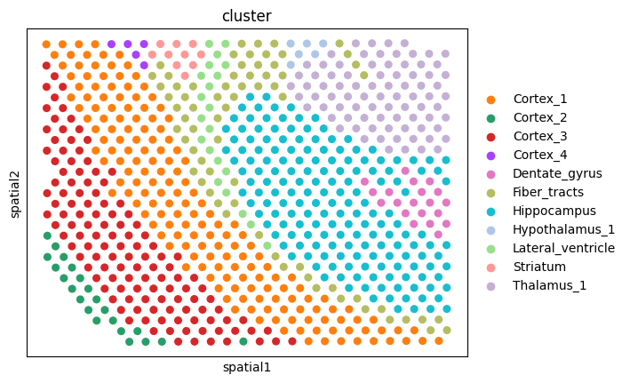
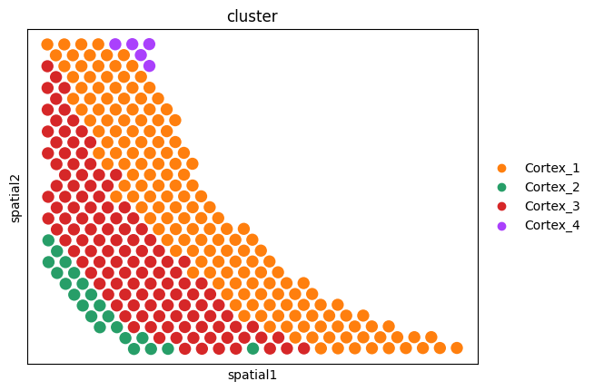
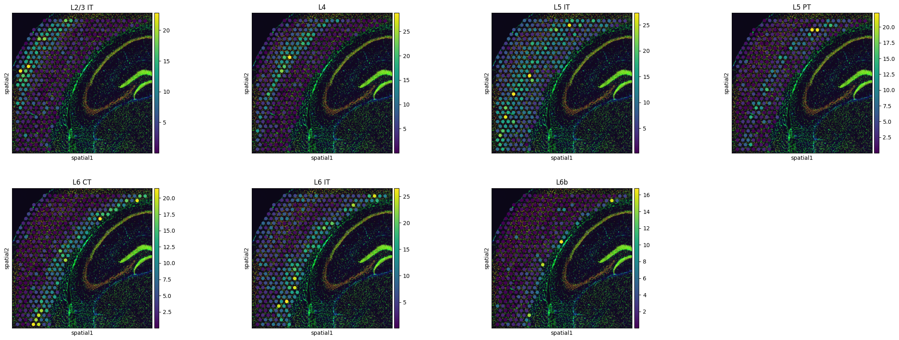

Reproducibility with original data
This tutorial demonstrates deconvolution on 10x Visium mouse brain data using SODB and Tangram.
A reference paper can be found at https://www.nature.com/articles/s41592-021-01264-7.
This tutorial refers to the following tutorial at https://squidpy.readthedocs.io/en/stable/external_tutorials/tutorial_tangram.html. At the same time, the way of loadding data is modified by using SODB.
（需要增加单细胞数据链接）
Import packages and set configurations
[1]:
# Import several Python packages, including:
# scanpy: a Python package for single-cell RNA sequencing analysis
import scanpy as sc
# squidpy: a Python package for spatial transcriptomics analysis
import squidpy as sq
# numpy: a Python package for scientific computing with arrays
import numpy as np
# pandas: a Python package for data manipulation and analysis
import pandas as pd
# anndata: a Python package for handling annotated data objects in genomics
import anndata as ad
# pathlib: a Python module for working with file system paths
import pathlib
# matplotlib: a Python plotting library
import matplotlib.pyplot as plt
import matplotlib as mpl
# skimage: a Python package for image processing
import skimage
[2]:
# Import tangram for spatial deconvolution
import tangram as tg
[3]:
# print a header message, and the version of the squidpy and tangram packages
sc.logging.print_header()
print(f"squidpy=={sq.__version__}")
print(f"tangram=={tg.__version__}")
scanpy==1.9.3 anndata==0.8.0 umap==0.5.3 numpy==1.22.4 scipy==1.9.1 pandas==1.5.3 scikit-learn==1.2.2 statsmodels==0.13.5 python-igraph==0.10.4 pynndescent==0.5.8
squidpy==1.2.3
tangram==1.0.4
Load a single cell dataset
[11]:
# Load the reference single cell dataset
# The input sc data has been normalized and log-transformed
adata_sc = sc.read_h5ad('data/Visium/sc_mouse_cortex.h5ad')
[12]:
# Print out the metadata of adata_sc
adata_sc
[12]:
AnnData object with n_obs × n_vars = 21697 × 36826
obs: 'sample_name', 'organism', 'donor_sex', 'cell_class', 'cell_subclass', 'cell_cluster', 'n_genes_by_counts', 'log1p_n_genes_by_counts', 'total_counts', 'log1p_total_counts', 'pct_counts_in_top_50_genes', 'pct_counts_in_top_100_genes', 'pct_counts_in_top_200_genes', 'pct_counts_in_top_500_genes', 'total_counts_mt', 'log1p_total_counts_mt', 'pct_counts_mt', 'n_counts'
var: 'mt', 'n_cells_by_counts', 'mean_counts', 'log1p_mean_counts', 'pct_dropout_by_counts', 'total_counts', 'log1p_total_counts', 'n_cells', 'highly_variable', 'highly_variable_rank', 'means', 'variances', 'variances_norm'
uns: 'cell_class_colors', 'cell_subclass_colors', 'hvg', 'neighbors', 'pca', 'umap'
obsm: 'X_pca', 'X_umap'
varm: 'PCs'
obsp: 'connectivities', 'distances'
[13]:
# Visualize a UMAP projection colored by cell_subclass
sc.pl.umap(
adata_sc, color="cell_subclass", size=10, frameon=False, show=False
)
[13]:
<Axes: title={'center': 'cell_subclass'}, xlabel='UMAP1', ylabel='UMAP2'>

Streamline development of loading spatial data with SOBD
[14]:
# Import pysodb package
# Pysodb is a Python package that provides a set of tools for working with SODB databases.
# SODB is a format used to store data in memory-mapped files for efficient access and querying.
# This package allows users to interact with SODB files using Python.
import pysodb
[16]:
# Initialization
sodb = pysodb.SODB()
[17]:
# Define the name of the dataset_name and experiment_name
dataset_name = 'Biancalani2021Deep'
experiment_name = 'visium_fluo_crop'
# Load a specific experiment
# It takes two arguments: the name of the dataset and the name of the experiment to load.
# Two arguments are available at https://gene.ai.tencent.com/SpatialOmics/.
adata_st = sodb.load_experiment(dataset_name,experiment_name)
load experiment[visium_fluo_crop] in dataset[Biancalani2021Deep]
[18]:
adata_st
[18]:
AnnData object with n_obs × n_vars = 704 × 16562
obs: 'in_tissue', 'array_row', 'array_col', 'n_genes_by_counts', 'log1p_n_genes_by_counts', 'total_counts', 'log1p_total_counts', 'pct_counts_in_top_50_genes', 'pct_counts_in_top_100_genes', 'pct_counts_in_top_200_genes', 'pct_counts_in_top_500_genes', 'total_counts_MT', 'log1p_total_counts_MT', 'pct_counts_MT', 'n_counts', 'leiden', 'cluster'
var: 'gene_ids', 'feature_types', 'genome', 'MT', 'n_cells_by_counts', 'mean_counts', 'log1p_mean_counts', 'pct_dropout_by_counts', 'total_counts', 'log1p_total_counts', 'n_cells', 'highly_variable', 'highly_variable_rank', 'means', 'variances', 'variances_norm', 'dispersions', 'dispersions_norm'
uns: 'cluster_colors', 'hvg', 'leiden', 'leiden_colors', 'log1p', 'moranI', 'neighbors', 'pca', 'spatial', 'spatial_neighbors', 'umap'
obsm: 'X_pca', 'X_umap', 'spatial'
varm: 'PCs'
obsp: 'connectivities', 'distances', 'spatial_connectivities', 'spatial_distances'
[19]:
# Create a spatial scatter plot colored by cluster label
sq.pl.spatial_scatter(adata_st,color='cluster')

[20]:
# Visualize embedding base on 'spatial' with points colored by 'cluster' label
sc.pl.embedding(adata_st,basis='spatial',color='cluster')

[21]:
# select a subset based on the "Cortex_{i}" of 'adata_st.obs.cluster'
# the arange of i is form 0 to 4
# And creates a copy of the resulting subset
adata_st = adata_st[
adata_st.obs.cluster.isin([f"Cortex_{i}" for i in np.arange(1, 5)])
].copy()
[22]:
# Visualize embedding base on 'spatial' with points colored by a new 'cluster' label
sc.pl.embedding(adata_st,basis='spatial',color='cluster')

Preparation
[23]:
# Perform differential gene expression analysis across 'cell_subclasses' in 'adata_sc'
sc.tl.rank_genes_groups(adata_sc, groupby="cell_subclass", use_raw=False)
WARNING: Default of the method has been changed to 't-test' from 't-test_overestim_var'
[24]:
# Create a Pandas DataFrame called "markers_df" by extracting the top 100 differentially expressed genes from 'adata_sc'
markers_df = pd.DataFrame(adata_sc.uns["rank_genes_groups"]["names"]).iloc[0:100, :]
# Create a NumPy array called "genes_sc" by extracting the unique values from the "value" column of a melted version of the "markers_df"
genes_sc = np.unique(markers_df.melt().value.values)
# Extracte the names of genes from "adata_st"
genes_st = adata_st.var_names.values
# Create a Python list called "genes"
# Contain the intersection of genes identified as differentially expressed in "genes_sc" and genes detected in "genes_st".
genes = list(set(genes_sc).intersection(set(genes_st)))
# The length of "genes"
len(genes)
[24]:
1281
Perform Tangram for alignment
[25]:
# Use the Tangram to align the gene expression profiles of "adata_sc" and "adata_st" based on the shared set of genes identified by the intersection of "genes_sc" and "genes_st".
tg.pp_adatas(adata_sc, adata_st, genes=genes)
INFO:root:1280 training genes are saved in `uns``training_genes` of both single cell and spatial Anndatas.
INFO:root:14785 overlapped genes are saved in `uns``overlap_genes` of both single cell and spatial Anndatas.
INFO:root:uniform based density prior is calculated and saved in `obs``uniform_density` of the spatial Anndata.
INFO:root:rna count based density prior is calculated and saved in `obs``rna_count_based_density` of the spatial Anndata.
[26]:
# Use the map_cells_to_space function from the tangram to map cells from "adata_sc" onto "adata_st".
# The mapping use "cells" mode, which assign each cell from adata_sc to a location within the spatial transcriptomics space based on its gene expression profile.
ad_map = tg.map_cells_to_space(
adata_sc,
adata_st,
mode="cells",
# target_count=adata_st.obs.cell_count.sum(),
# density_prior=np.array(adata_st.obs.cell_count) / adata_st.obs.cell_count.sum(),
num_epochs=1000,
device="cpu",
)
INFO:root:Allocate tensors for mapping.
INFO:root:Begin training with 1280 genes and rna_count_based density_prior in cells mode...
INFO:root:Printing scores every 100 epochs.
Score: 0.613, KL reg: 0.001
Score: 0.733, KL reg: 0.000
Score: 0.736, KL reg: 0.000
Score: 0.737, KL reg: 0.000
Score: 0.737, KL reg: 0.000
Score: 0.737, KL reg: 0.000
Score: 0.737, KL reg: 0.000
Score: 0.737, KL reg: 0.000
Score: 0.737, KL reg: 0.000
Score: 0.738, KL reg: 0.000
INFO:root:Saving results..
[27]:
ad_map
[27]:
AnnData object with n_obs × n_vars = 21697 × 324
obs: 'sample_name', 'organism', 'donor_sex', 'cell_class', 'cell_subclass', 'cell_cluster', 'n_genes_by_counts', 'log1p_n_genes_by_counts', 'total_counts', 'log1p_total_counts', 'pct_counts_in_top_50_genes', 'pct_counts_in_top_100_genes', 'pct_counts_in_top_200_genes', 'pct_counts_in_top_500_genes', 'total_counts_mt', 'log1p_total_counts_mt', 'pct_counts_mt', 'n_counts'
var: 'in_tissue', 'array_row', 'array_col', 'n_genes_by_counts', 'log1p_n_genes_by_counts', 'total_counts', 'log1p_total_counts', 'pct_counts_in_top_50_genes', 'pct_counts_in_top_100_genes', 'pct_counts_in_top_200_genes', 'pct_counts_in_top_500_genes', 'total_counts_MT', 'log1p_total_counts_MT', 'pct_counts_MT', 'n_counts', 'leiden', 'cluster', 'uniform_density', 'rna_count_based_density'
uns: 'train_genes_df', 'training_history'
[28]:
# Project "Cell_subclass" annotations from a single-cell RNA sequencing (scRNA-seq) dataset onto a spatial transcriptomics dataset, based on a previously computed cell-to-space mapping
tg.project_cell_annotations(ad_map, adata_st, annotation="cell_subclass")
INFO:root:spatial prediction dataframe is saved in `obsm` `tangram_ct_pred` of the spatial AnnData.
[29]:
# Print adata_st.obsm['tangram_ct_pred']
adata_st.obsm['tangram_ct_pred']
[29]:
| Pvalb | L4 | Vip | L2/3 IT | Lamp5 | NP | Sst | L5 IT | Oligo | L6 CT | ... | L5 PT | Astro | L6b | Endo | Peri | Meis2 | Macrophage | CR | VLMC | SMC | |
|---|---|---|---|---|---|---|---|---|---|---|---|---|---|---|---|---|---|---|---|---|---|
| AAATGGCATGTCTTGT-1 | 7.809727 | 0.602690 | 7.684955 | 0.826228 | 4.400264 | 2.589142 | 3.143504 | 5.196132 | 0.155253 | 7.294017 | ... | 8.664869 | 2.573349 | 0.281258 | 0.412784 | 0.000076 | 0.000066 | 1.247531 | 0.070499 | 0.167258 | 0.627665 |
| AACAACTGGTAGTTGC-1 | 5.715232 | 0.000604 | 14.581396 | 0.207686 | 5.556412 | 3.897364 | 3.344852 | 10.164038 | 0.450173 | 2.114142 | ... | 7.679641 | 1.993195 | 1.645181 | 0.518714 | 0.078318 | 0.000459 | 0.534635 | 0.066145 | 0.000130 | 0.299213 |
| AACAGGAAATCGAATA-1 | 4.831826 | 1.001870 | 7.364245 | 1.041612 | 6.277684 | 0.413503 | 8.242720 | 6.679482 | 0.496779 | 14.989484 | ... | 0.562375 | 1.995712 | 0.680008 | 0.542730 | 0.200446 | 0.684655 | 0.651862 | 0.058122 | 0.000165 | 0.333420 |
| AACCCAGAGACGGAGA-1 | 8.589804 | 4.175763 | 4.638950 | 4.470548 | 7.834509 | 0.000336 | 7.685515 | 12.343997 | 0.488403 | 2.658836 | ... | 0.001456 | 2.909278 | 0.000471 | 0.560556 | 0.000042 | 0.336403 | 0.900331 | 0.000066 | 0.557967 | 0.550292 |
| AACCGTTGTGTTTGCT-1 | 9.990313 | 5.441794 | 4.714663 | 1.678014 | 5.508845 | 1.483209 | 6.444257 | 14.175096 | 1.404791 | 0.000503 | ... | 1.804151 | 1.123749 | 0.998521 | 1.451936 | 0.056683 | 0.000208 | 0.219766 | 0.034044 | 0.000118 | 0.581478 |
| ... | ... | ... | ... | ... | ... | ... | ... | ... | ... | ... | ... | ... | ... | ... | ... | ... | ... | ... | ... | ... | ... |
| TTGGATTGGGTACCAC-1 | 5.641819 | 2.058308 | 12.881126 | 1.627751 | 3.359651 | 1.249576 | 13.079297 | 9.607204 | 0.419696 | 0.616700 | ... | 6.947644 | 2.559545 | 0.000223 | 0.490524 | 0.019175 | 0.000077 | 0.261640 | 0.000564 | 0.250397 | 0.716284 |
| TTGGCTCGCATGAGAC-1 | 3.322495 | 4.845051 | 4.550827 | 10.971983 | 7.764623 | 0.000582 | 12.342369 | 9.450901 | 0.159477 | 0.092170 | ... | 0.000585 | 0.957426 | 0.001045 | 0.404693 | 0.006123 | 0.036123 | 0.290322 | 0.000344 | 0.237261 | 0.442137 |
| TTGTATCACACAGAAT-1 | 3.573624 | 0.001394 | 7.127228 | 0.003228 | 4.591670 | 4.277098 | 9.285900 | 9.232115 | 0.697667 | 6.629681 | ... | 4.475281 | 0.783166 | 0.737044 | 0.343111 | 0.067538 | 0.000370 | 0.167680 | 0.040888 | 0.239439 | 0.220072 |
| TTGTGGCCCTGACAGT-1 | 9.355780 | 1.569948 | 9.292291 | 0.141470 | 0.208387 | 0.386280 | 5.018963 | 4.222025 | 0.805368 | 6.953451 | ... | 3.673550 | 2.167665 | 1.065244 | 0.610526 | 0.061187 | 0.000065 | 0.723517 | 0.000139 | 0.355459 | 0.213958 |
| TTGTTAGCAAATTCGA-1 | 3.873220 | 20.980103 | 6.624079 | 1.769871 | 1.144407 | 0.000994 | 5.585440 | 14.799476 | 0.827283 | 0.002911 | ... | 0.954696 | 1.307711 | 0.000311 | 0.545261 | 0.092780 | 0.013870 | 0.106881 | 0.000795 | 0.183378 | 0.195309 |
324 rows × 23 columns
[30]:
# Concatenate the predicted cell type labels computed by the tangram during the cell-to-space mapping step to 'adata_st.obs'
adata_st.obs = pd.concat([adata_st.obs, adata_st.obsm["tangram_ct_pred"]], axis=1)
# Create a spatial scatter plot showing the distribution of different cell types
sq.pl.spatial_scatter(
adata_st,
color=["L2/3 IT", "L4", "L5 IT", "L5 PT", "L6 CT", "L6 IT", "L6b"],
)
